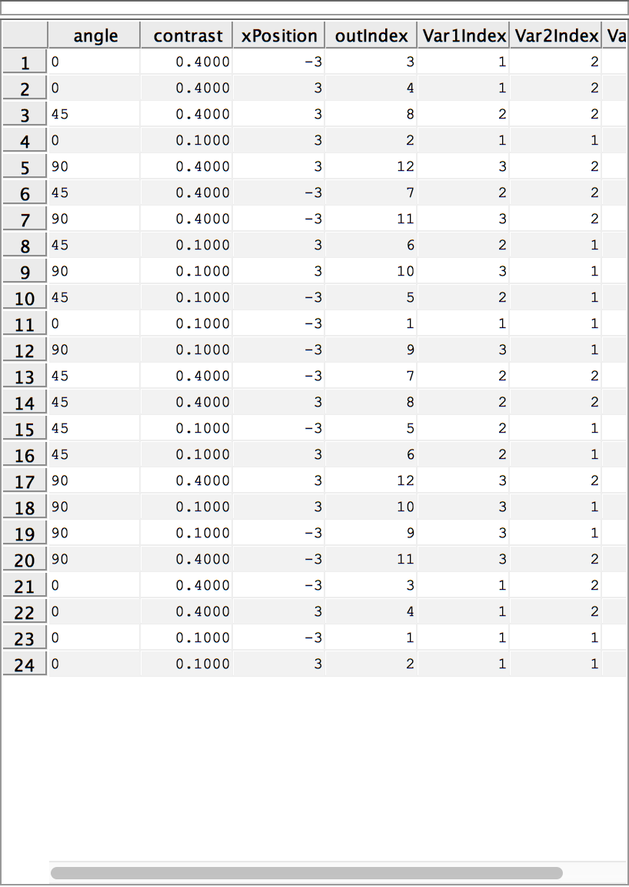
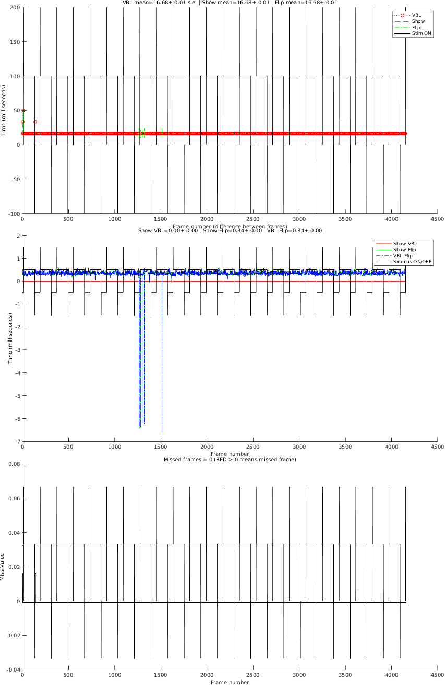

Demonstration of a command-driven setup of an Opticka Experiment.
Opticka is an object oriented framework/GUI for the Psychophysics toolbox, allowing randomised interleaved presentation of parameter varying stimuli specified in experimenter-relevant values. It is designed to work on OS X, Windows (currently no digital I/O) or Linux, and can interface via strobed words (using a cheap and very reliable LabJack) and ethernet with external harware for recording neurophysiological data. In this example, Stimulus objects (myStims class cell array), stimulus sequence variables (myTask object), and screenManager (myScreen object) are passed to the runExperiment object for final display. Opticka also has a UI (type opticka in the command window), which is a visual manager of the objects introduced here. The UI also controls other functions such as calibration, protocol loading/saving and communication with neurophysiological equipment via LabJack and ethernet. There is also an independent receptive field mapper (rfMapper) that uses mouse control to probe receptive fields and generate drawn hand maps.
The source of this file can be found at: https://github.com/iandol/opticka/blob/master/optickatest.m
Contents
Initial clear up of previous runs
Make sure we start in a clean environment, not essential
clear myStims myTask myScreen rExp sca %PTB screen clear all
Stimulus Initialisation
These set up the 10 different stimuli. Please note that values are in degrees, cycles/deg, deg/s etc. Colour is repestend using floating point values from 0 - 1 and all objects accept an opacity (alpha) value. Each stimulus is a class object with a series of properties ('sf', 'colour' etc.) that you can set up by simply passing property name : value pairs into the stimulus class. You can also pass these in as a structure if you prefer. If you do not pass any properties, default values will be used without problems.
First we create a stimulus manager object that collects and handles groups of stimuli as if they were a single 'thing', so for example when you use the draw method on a metaStimulus, it tells each of its child stimuli to draw in order
myStims = metaStimulus();
Stimului are made using stimulus classes. Each class inherits from baseStimulus, which has 5 abstract classes ALL stimuli must implement: [1] SETUP(screenManager) - takes a screenManager and sets up the stimulus properties ready for display. [2] DRAW() - draws the stimulus [3] ANIMATE() - for each stimulus class, animate takes speed, tf etc. and updates the position onscreen for the next flip. [4] UPDATE() - if any parameters have changed (size, position, colour etc.), then update ensures all properties are properly updated. [5] RESET() - returns the object back to its pre-setup state.
%The first five stimuli are gratings / gabors of varying kinds. myStims{1}=gratingStimulus('sf', 1, 'tf', 0, 'phase', 90, 'contrast', 0.7, 'size', 2, 'angle', -45,... 'mask', false); myStims{2}=gaborStimulus('sf', 1, 'contrast', 0.75, 'tf', 3, 'size', 3, 'angle', -70,... 'aspectRatio', 0.5, 'xPosition', 5, 'yPosition', -5); myStims{3}=gratingStimulus('sf', 1, 'tf', 4, 'contrast', 0.7, 'size', 3, 'angle', 45,... 'xPosition', 0, 'yPosition', -10, 'mask', true, 'sigma', 30); myStims{4}=gratingStimulus('sf', 3, 'contrast', 0.75, 'tf', 1, 'size', 3, 'xPosition', -3,... 'yPosition', -5); myStims{5}=gratingStimulus('type', 'square', 'sf', 1, 'contrast', 1, 'colour', [0.5 0.5 0.5], 'tf', 0,... 'size', 3, 'xPosition', 3, 'yPosition', 0, 'sigma',30, 'useAlpha', true);
This is a colour grating where two independant colours can be modulated relative to a base colour, in this case this is a red/green grating modulating from 0.5 background grey.
myStims{6}=colourGratingStimulus('colour', [1 0 0 1], 'colour2', [0 1 0 1],...
'baseColour', [0.5 0.5 0.5], 'tf', 1, 'size', 3, 'xPosition', 0, 'yPosition', 6);
coherent dot stimulus; 200 dots moving at 2deg/s with coherence set to 0.25
myStims{7}=dotsStimulus('density',50,'coherence',0.25,'xPosition',4,...
'yPosition',6,'dotType',3,'dotSize',0.1,'colorType','randomBW','mask',true);
A simple bar: bars can be solid in colour or have checkerboard/random texture (try setting 'type' to 'random'). This is a bar moving at 4deg/s. Notice the startPosition is -4; this means start -4 degrees "behind" X and Y position, as the stimulus is displayed for 2 seconds the bar therefore traverses 4 degrees behind then 4 degrees past the X and Y position (i.e. drift a bar over a RF location) Also note as we will change the angle of this stimulus the geometry is calculated for you automatically!
myStims{8}=barStimulus('type','checkerboard','checkSize',0.25,'barWidth',1,'barLength',4,...
'speed',4,'xPosition',0,'yPosition',0,'startPosition',-4,'phaseReverseTime',0.5);
an edge-smoothed spot; spots can also flash if needed
myStims{9}=discStimulus('type','flash','speed',2,'xPosition',4,...
'yPosition',4,'colour',[1 1 0],'size',2,'flashTime',[0.2 0.15]);
a texture stimulus, by default this loads a picture from the opticka stimulus directory; you can rotate it, scale it etc and drift it across screen as in this case. Size is in degrees, scaling the whole picture
myStims{10}=textureStimulus('speed',2,'xPosition',-10,'yPosition',10,'size',4);
a movie stimulus, by default this loads a movie from the opticka stimulus directory; you can rotate it, scale it etc and drift it across screen as in this case. Size is in degrees, scaling the whole movie
myStims{11}=movieStimulus('speed',1,'xPosition',-5,'yPosition',-10,...
'mask',[0 0 0],'size',3);
Task Initialisation
The stimulusSequence class defines a stimulus sequence (task) which is composed of randomised stimulus parameter changes (called variables) repeated over a set of blocks. A trial is an individual stimulus presentation. This example has three different variables changing over 3*2*2 values (12 unique trials) which is then repeated over 2 blocks for 24 trials in total.
NOTE: for more complex behavioural tasks, Opticka uses a finite state machine to generate flexible experimental protocols, see stateMachine() for more details.
myTask = stimulusSequence; %new stimulusSequence object instance myTask.nBlocks = 2; %number of blocks myTask.trialTime = 2; %time of stimulus display: 2 seconds myTask.isTime = 0.25; %inter trial time: 0.25 seconds myTask.ibTime=0.5; %inter block time: 1 second myTask.realTime = true; %we use real time for switching trials, false uses a tick timer updated every flip
Variable 1
Our first variable is angle, applied to stimulus 1 3 7 and 10, randomly selected from values of 0 45 and 90 degrees
myTask.nVar(1).name = 'angle'; myTask.nVar(1).stimulus = [1 3 8 10]; myTask.nVar(1).values = [0 45 90]; % the next two parameters allow us to link a stimulus with % an offset; for example you could set stimulus 1 to values [1 2 3] % and if offsetvalue was 2 and offsetstimulus was 2 then the second % stimulus would change through [3 4 5]; myTask.nVar(1).offsetstimulus = [6 11]; myTask.nVar(1).offsetvalue = [90];
Variable 2
Our second variable is contrast, applied to stimulus 2 and 3, randomly selected from values of 0.025 and 0.1
myTask.nVar(2).name = 'contrast';
myTask.nVar(2).stimulus = [2 3 5];
myTask.nVar(2).values = [0.15 0.55];
Variable 3
Our third variable is X position, applied to stimulus 2 and 8, randomly selected from values of -3 and 3 degrees from visual center of screen
myTask.nVar(3).name = 'xPosition'; myTask.nVar(3).stimulus = [2 7]; myTask.nVar(3).values = [-6 6]; % the next two parameters allow us to link a stimulus with % an offset; for example you could set stimulus 1 to values [1 2 3] % and if offsetvalue was 2 and offsetstimulus was 2 then the second % stimulus would change through [3 4 5]; in this case we offset stimulus 10 % to +1 the values above i.e. [-5 7] myTask.nVar(3).offsetstimulus = [10]; myTask.nVar(3).offsetvalue = [2];
Randomisation
We call the method to randomise the trials in a block structure
randomiseStimuli(myTask);
Visual Trial List
Lets print out a table of the stimulus properties for every trial
showLog(myTask);
Setup screenManager Object
we initialise the object with parameter options to open the PTB screen with. Note distance and pixels per cm define the resultant geometry > pixel mappings. You can set several screen parameters, windowing, blending etc. hideFlash uses a trick from Mario to set the CLqUT to the task background colour so you don't see the black flash on PTB screen initialisation.
myScreen = screenManager('distance', 57.3,... %display distance from observer 'pixelsPerCm', 32,... %calibration value for screen size/pixel density, see calibrateSize() 'backgroundColour', [0.5 0.5 0.5],... %initial background colour 'blend', true,... %enable OpenGL blending, you can also set blend modes when needed 'srcMode', 'GL_ONE',... %src blend mode 'dstMode', 'GL_ZERO',... %dst blend mode 'windowed', [0 0 1000 1000],... %set to a widthxheight for debugging i.e. [800 600]; set to empty for fullscreen 'antiAlias', 0,... %can be set to 4 or 8x oversampling with no dropped frames on macOS ATI 5870 'bitDepth', 'FloatingPoint32bitIfPossible',... %8bit, FloatingPoint16bit FloatingPoint32bit etc. 'displayPPRefresh', 100); %set refresh to 100Hz only if Dispay++ attached
Setup runExperiment Object
We now pass our stimulus screen and sequence objects to the runExperiment class. runExperiment contains the run() method that actually runs the task.
rExp = runExperiment('stimuli', myStims,... %stimulus objects 'task', myTask,... %task design object 'screen', myScreen,... %screen manager object 'debug', false,... %disable debug mode 'verbose', false); %minimal verbosity
run our experiment, to exit early, press [q] during the interstimulus period.
run(rExp);
---> screenManager: Skipping Sync Tests etc. - ONLY FOR DEVELOPMENT!
---> screenManager: Probing for a Display++...BitsPlusPlus: Could not find a Bits# config file under [/Users/ian/Library/Preferences/Psychtoolbox/BitsSharpConfig.txt]. Assuming a Bits+ device instead of a Bits# is connected.
BitsPlusPlus: Please create a config file under this name if you have a Bits# and want to use it as Bits# instead of as a Bits+.
BitsPlusPlus: The most simple way is to create an empty file. A more robust way is to store the name of the Bits# serial port
BitsPlusPlus: in the first line of the text file, e.g., COM5 [Windows], or /dev/ttyACM0 [Linux] or similar.
NO Display++...
---> screenManager: Bit Depth mode set to: FloatingPoint32BitIfPossible
PTB-WARNING: ==================================================================================================================
PTB-WARNING: DESKTOP COMPOSITOR IS ACTIVE! ALL FLIP STIMULUS ONSET TIMESTAMPS WILL BE VERY LIKELY UNRELIABLE AND LESS ACCURATE!
PTB-WARNING: STIMULUS ONSET TIMING WILL BE UNRELIABLE AS WELL, AND GRAPHICS PERFORMANCE MAY BE REDUCED!
PTB-WARNING: DO NOT USE THIS MODE FOR RUNNING REAL EXPERIMENT SESSIONS WITH ANY REQUIREMENTS FOR ACCURATE TIMING!
PTB-WARNING: ==================================================================================================================
PTB-INFO: All display tests and calibrations disabled. Assuming a refresh interval of 60.000000 Hz. Timing will be inaccurate!
---> screenManager: Previous OpenGL blending: GL_ONE | GL_ZERO
---> screenManager: OpenGL blending now: GL_ONE | GL_ZERO
Compiling all shaders matching BasicSineGratingShader * into a GLSL program.
Building a fragment shader:Reading shader from file /Users/ian/Code/Psychtoolbox-3/Psychtoolbox/PsychOpenGL/PsychGLSLShaders/BasicSineGratingShader.frag.txt ...
Building a vertex shader:Reading shader from file /Users/ian/Code/Psychtoolbox-3/Psychtoolbox/PsychOpenGL/PsychGLSLShaders/BasicSineGratingShader.vert.txt ...
Compiling all shaders matching NonSymetricGaborShader * into a GLSL program.
Building a fragment shader:Reading shader from file /Users/ian/Code/Psychtoolbox-3/Psychtoolbox/PsychOpenGL/PsychGLSLShaders/NonSymetricGaborShader.frag.txt ...
Building a vertex shader:Reading shader from file /Users/ian/Code/Psychtoolbox-3/Psychtoolbox/PsychOpenGL/PsychGLSLShaders/NonSymetricGaborShader.vert.txt ...
Compiling all shaders matching SineGratingSmoothedApertureShader * into a GLSL program.
Building a fragment shader:Reading shader from file /Users/ian/Code/Psychtoolbox-3/Psychtoolbox/PsychOpenGL/PsychGLSLShaders/SineGratingSmoothedApertureShader.frag.txt ...
Building a vertex shader:Reading shader from file /Users/ian/Code/Psychtoolbox-3/Psychtoolbox/PsychOpenGL/PsychGLSLShaders/SineGratingSmoothedApertureShader.vert.txt ...
Building a vertex shader:Reading shader from file /Users/ian/Code/Psychtoolbox-3/Psychtoolbox/PsychOpenGL/PsychGLSLShaders/BasicSineGratingShader.vert.txt ...
Building a fragment shader:Reading shader from file /Users/ian/Code/Psychtoolbox-3/Psychtoolbox/PsychOpenGL/PsychGLSLShaders/ApertureSineGratingShader.frag.txt ...
Compiling all shaders matching SquareWaveApertureShader * into a GLSL program.
Building a fragment shader:Reading shader from file /Users/ian/Code/Psychtoolbox-3/Psychtoolbox/PsychOpenGL/PsychGLSLShaders/SquareWaveApertureShader.frag.txt ...
Building a vertex shader:Reading shader from file /Users/ian/Code/Psychtoolbox-3/Psychtoolbox/PsychOpenGL/PsychGLSLShaders/SquareWaveApertureShader.vert.txt ...
Building a vertex shader:Reading shader from file /Users/ian/Code/opticka/stimuli/colorgrating.vert ...
Building a fragment shader:Reading shader from file /Users/ian/Code/opticka/stimuli/colorgrating.frag ...
Compiling all shaders matching SmoothedDiscShader * into a GLSL program.
Building a fragment shader:Reading shader from file /Users/ian/Code/Psychtoolbox-3/Psychtoolbox/PsychOpenGL/PsychGLSLShaders/SmoothedDiscShader.frag.txt ...
Building a vertex shader:Reading shader from file /Users/ian/Code/Psychtoolbox-3/Psychtoolbox/PsychOpenGL/PsychGLSLShaders/SmoothedDiscShader.vert.txt ...
Compiling all shaders matching SmoothedDiscShader * into a GLSL program.
Building a fragment shader:Reading shader from file /Users/ian/Code/Psychtoolbox-3/Psychtoolbox/PsychOpenGL/PsychGLSLShaders/SmoothedDiscShader.frag.txt ...
Building a vertex shader:Reading shader from file /Users/ian/Code/Psychtoolbox-3/Psychtoolbox/PsychOpenGL/PsychGLSLShaders/SmoothedDiscShader.vert.txt ...
---> textureStimulus#23E79FD67: Load: /Users/ian/Code/opticka/stimuli/Bosch.jpeg | loadImage
--->>> movieStimulus: /Users/ian/Code/opticka/stimuli/monkey-dance.mp4
1.04 seconds duration, 25.000000 fps, w x h = 350 x 350, in 197ms
Blocking: 0 | Loop: 1 | Preloadsecs: -1 | Pixelformat: | Flags:
Compiling all shaders matching /Users/ian/Code/Psychtoolbox-3/Psychtoolbox/PsychOpenGL/PsychGLSLShaders/ColorMaskedTextureBlitShader.frag.txt * into a GLSL program.
Building a fragment shader:Reading shader from file /Users/ian/Code/Psychtoolbox-3/Psychtoolbox/PsychOpenGL/PsychGLSLShaders/ColorMaskedTextureBlitShader.frag.txt ...
---> ioManager#23E82D96D: Constructor parsing input argument | name
---> ioManager#23E82E31C: Constructor parsing input argument | name
---> stimulusSequence.initialise: Randomised and Initialised!
===>>> Warming up the GPU and I/O systems... <<<===
START @B: 1 | R: 1 [1/24] | isBlank: 1 | Time: 0.000 (0) | V: 12 | / angle: 90.00 / contrast: 0.55 / xPosition: 6.00
@B: 1 | R: 1 [1/24] | isBlank: 1 | Time: 0.000 (2) | V: 12 | / angle: 90.00 / contrast: 0.55 / xPosition: 6.00
IS TIME: 1
@B: 1 | R: 2 [2/24] | isBlank: 1 | Time: 2.273 (138) | V: 4 | / angle: 0.00 / contrast: 0.55 / xPosition: 6.00
IS TIME: 1
@B: 1 | R: 3 [3/24] | isBlank: 1 | Time: 5.274 (318) | V: 11 | / angle: 90.00 / contrast: 0.55 / xPosition: -6.00
IS TIME: 1
@B: 1 | R: 4 [4/24] | isBlank: 1 | Time: 8.274 (498) | V: 6 | / angle: 45.00 / contrast: 0.15 / xPosition: 6.00
IS TIME: 1
@B: 1 | R: 5 [5/24] | isBlank: 1 | Time: 11.275 (678) | V: 3 | / angle: 0.00 / contrast: 0.55 / xPosition: -6.00
IS TIME: 1
@B: 1 | R: 6 [6/24] | isBlank: 1 | Time: 14.275 (858) | V: 8 | / angle: 45.00 / contrast: 0.55 / xPosition: 6.00
---> screenManager: RESET GAMMA TABLES
---> Number of dropped movie frames: 0
---> screenManager: RESET GAMMA TABLES
---> screenManager: RESET OPENGL BLEND MODE to GL_ONE & GL_ZERO
WARNING: This session of your experiment was run by you with the setting Screen('Preference', 'SkipSyncTests', 2).
WARNING: This means that some internal self-tests and calibrations were skipped. Your stimulus presentation timing
WARNING: may have been wrong. This is fine for development and debugging of your experiment, but for running the real
WARNING: study, please make sure to set Screen('Preference', 'SkipSyncTests', 0) for maximum accuracy and reliability.
Plot a timing log of every frame against the stimulus on/off times:
getRunLog(rExp);
The image above is a graphical timing plot of every frame and whether any frames were dropped during stimulus presentation. This will not consider dropped frames during the GPU warming or inter trial time as dropped as the display is blank and we are using absolute time values for our trial transitions. Opticka actually resets and updates the stimulus objects on the second and subsequent frames of the inter trial blank, this forces any computation of stimulus parameter to when it doesn't matter; but note for complex stimuli a frame or two may be dropped during the blank and so ensure you set the inter trial time > than the dropped frames!
You don't need to use opticka's stimuli using runExperiment(), you can use them in your own simple experiments, lets have a quick look here.
WaitSecs('YieldSecs',2); myMovie = myStims{11}; % the movie stimulus from above open(myScreen); %open a screen setup(myMovie, myScreen); %setup the stimulus with the screen configuration for i = 1:myScreen.screenVals.fps draw(myMovie); finishDrawing(myScreen); animate(myMovie); flip(myScreen); end reset(myMovie); close(myScreen);
---> screenManager: Skipping Sync Tests etc. - ONLY FOR DEVELOPMENT!
---> screenManager: Probing for a Display++...BitsPlusPlus: Could not find a Bits# config file under [/Users/ian/Library/Preferences/Psychtoolbox/BitsSharpConfig.txt]. Assuming a Bits+ device instead of a Bits# is connected.
BitsPlusPlus: Please create a config file under this name if you have a Bits# and want to use it as Bits# instead of as a Bits+.
BitsPlusPlus: The most simple way is to create an empty file. A more robust way is to store the name of the Bits# serial port
BitsPlusPlus: in the first line of the text file, e.g., COM5 [Windows], or /dev/ttyACM0 [Linux] or similar.
NO Display++...
---> screenManager: Bit Depth mode set to: FloatingPoint32BitIfPossible
PTB-WARNING: ==================================================================================================================
PTB-WARNING: DESKTOP COMPOSITOR IS ACTIVE! ALL FLIP STIMULUS ONSET TIMESTAMPS WILL BE VERY LIKELY UNRELIABLE AND LESS ACCURATE!
PTB-WARNING: STIMULUS ONSET TIMING WILL BE UNRELIABLE AS WELL, AND GRAPHICS PERFORMANCE MAY BE REDUCED!
PTB-WARNING: DO NOT USE THIS MODE FOR RUNNING REAL EXPERIMENT SESSIONS WITH ANY REQUIREMENTS FOR ACCURATE TIMING!
PTB-WARNING: ==================================================================================================================
PTB-INFO: All display tests and calibrations disabled. Assuming a refresh interval of 60.000000 Hz. Timing will be inaccurate!
---> screenManager: Previous OpenGL blending: GL_ONE | GL_ZERO
---> screenManager: OpenGL blending now: GL_ONE | GL_ZERO
--->>> movieStimulus: /Users/ian/Code/opticka/stimuli/monkey-dance.mp4
1.04 seconds duration, 25.000000 fps, w x h = 350 x 350, in 30ms
Blocking: 0 | Loop: 1 | Preloadsecs: -1 | Pixelformat: | Flags:
Compiling all shaders matching /Users/ian/Code/Psychtoolbox-3/Psychtoolbox/PsychOpenGL/PsychGLSLShaders/ColorMaskedTextureBlitShader.frag.txt * into a GLSL program.
Building a fragment shader:Reading shader from file /Users/ian/Code/Psychtoolbox-3/Psychtoolbox/PsychOpenGL/PsychGLSLShaders/ColorMaskedTextureBlitShader.frag.txt ...
---> Number of dropped movie frames: 0
---> screenManager: RESET GAMMA TABLES
---> screenManager: RESET OPENGL BLEND MODE to GL_ONE & GL_ZERO
WARNING: This session of your experiment was run by you with the setting Screen('Preference', 'SkipSyncTests', 2).
WARNING: This means that some internal self-tests and calibrations were skipped. Your stimulus presentation timing
WARNING: may have been wrong. This is fine for development and debugging of your experiment, but for running the real
WARNING: study, please make sure to set Screen('Preference', 'SkipSyncTests', 0) for maximum accuracy and reliability.